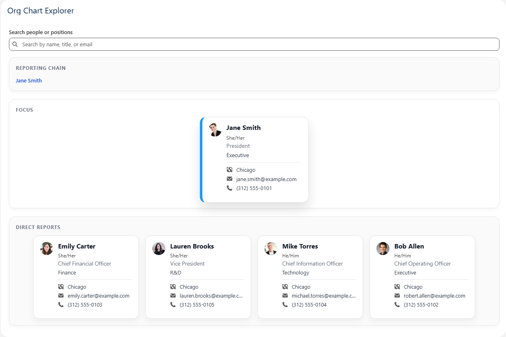
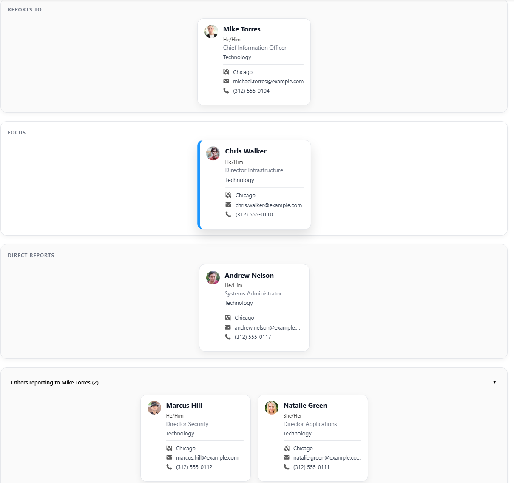
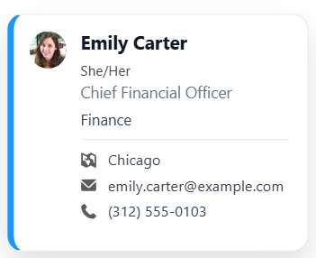
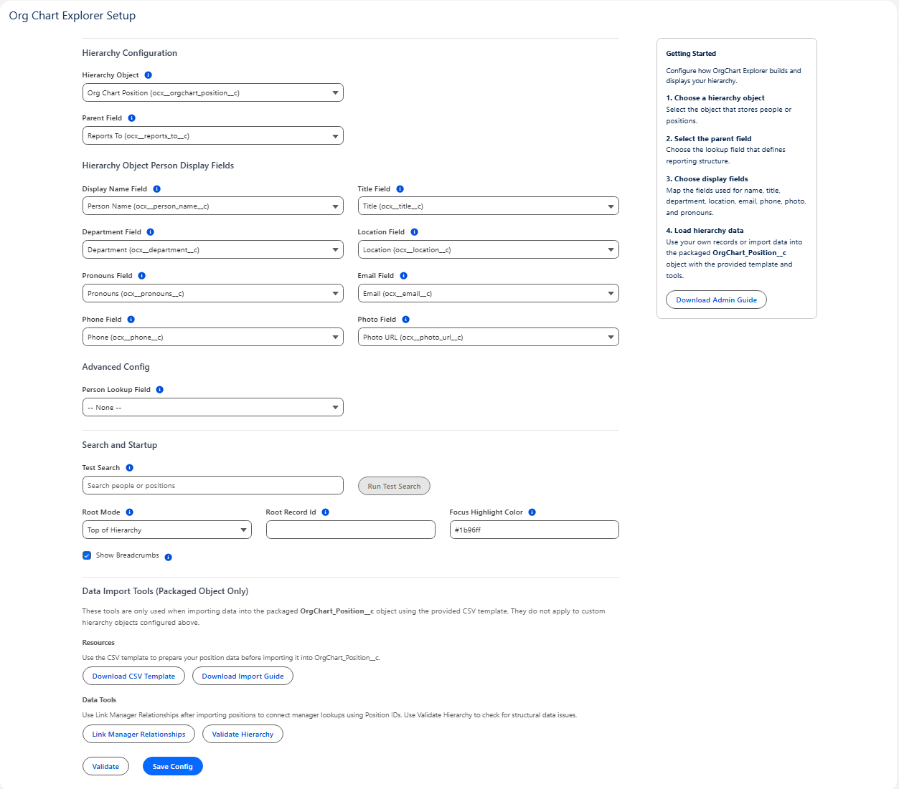

Turn Salesforce hierarchy data into a real org chart experience.
Org Chart Explorer helps teams visualize reporting structures, search people and positions, and navigate organizational hierarchy directly inside Salesforce — without building a custom solution from scratch.

Why Org Chart Explorer exists
Most Salesforce orgs were never given a clean, searchable, maintainable org chart experience. Teams end up relying on spreadsheets, static diagrams, incomplete hierarchy data, or custom solutions that are hard to maintain. Org Chart Explorer gives you a polished product experience instead.
No clean way to visualize structure
Reporting relationships may exist in Salesforce, but that does not mean people can actually navigate or understand them.
Custom builds take too long
Internal org chart tools often become one-off projects with brittle configuration, unclear ownership, and limited reuse.
Admins need something practical
This product is designed to be installable, understandable, and useful without creating a new support burden.
See the product in action
The experience is built around fast navigation, clear hierarchy context, and a clean card-based layout that makes organizational data easier to understand at a glance.
Short demo of Org Chart Explorer inside Salesforce.

Navigate reporting chains, focus on a person or position, and explore surrounding hierarchy context.
What makes the product easy to buy
Org Chart Explorer is not just an org chart screenshot. It is a configurable Salesforce product designed to help teams launch quickly and use it with confidence.
Interactive hierarchy navigation
Search by person or position, move through reporting lines, and keep surrounding context visible while exploring the structure.
- Reporting chain visibility
- Focused card view
- Direct report navigation
- Additional sibling context
Clean person and position cards
Display the information users actually care about in a readable format that feels polished inside Salesforce.
- Name, title, department
- Pronouns, location, phone, email
- Photo support
- Readable card-based layout
Admin-friendly setup
Configure the hierarchy object and mapped fields without turning the product into a custom development project.
- Hierarchy object mapping
- Parent relationship mapping
- Display field configuration
- Validation and link management tools

Card design that feels clear, professional, and usable for real organizational browsing.

Configuration experience built for admins who need control without unnecessary complexity.
Simple path from install to usable org chart
The product is built to reduce friction. Instead of spending weeks building an internal org chart tool, teams can install, configure, import, and start exploring.
Install
Deploy the app in Salesforce and assign the Org Chart Explorer admin access needed for setup.
Configure
Choose your hierarchy object, parent relationship, and display fields for the org chart experience.
Load data
Use your own hierarchy data or import data into the packaged position object using the provided tools.
Explore
Search people or positions, validate hierarchy structure, and launch a live org chart experience for your users.
Org Chart Explorer is built for teams that want the value of a polished Salesforce org chart experience without taking on the cost and maintenance burden of building one themselves.
Ready to talk about Org Chart Explorer?
Whether you want to evaluate fit, ask questions, or discuss your Salesforce hierarchy use case, reach out and let’s talk through it.